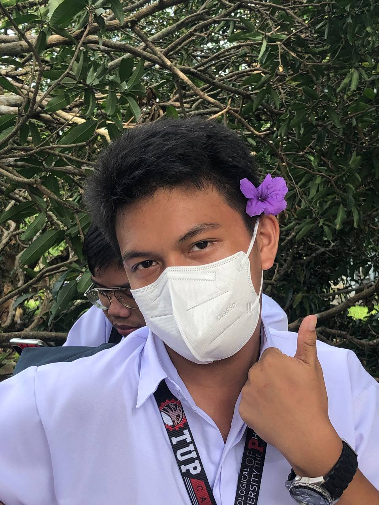

Escorial Mark, Josh O.
19 years old
Playing online games, Basketball, and singing in bathroom
To sing, hangout with friends, and play with friends and online friends
Annoying people
Get a diploma, give my parents own house
My favorite game is Genshin impact and League of legends
Bohemian Rhapsody is a 2018 biographical musical drama film that focuses on the life of Freddie Mercury, the lead singer of the British rock band Queen, from the formation of the band in 1970 to their 1985 Live Aid performance at the original Wembley Stadium.
"Crazy Little Thing Called Love" is a song by the British rock band Queen. Written by Freddie Mercury in 1979, the track is included on their 1980 album The Game, and also appears on the band's compilation album Greatest Hits in 1981.
"The heart is the strongest muscle."
Family and Friends